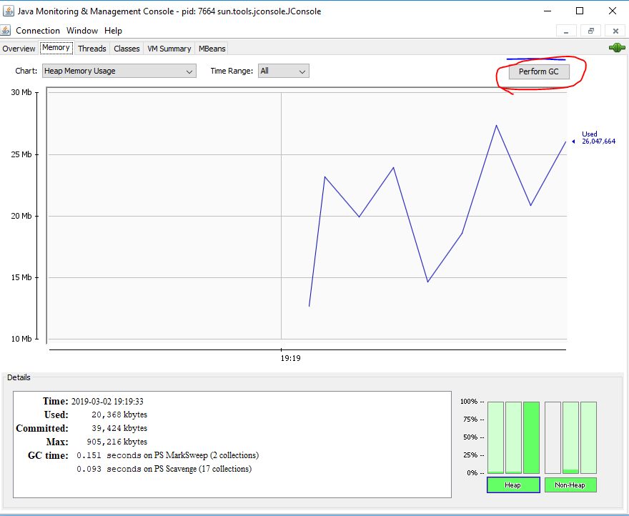
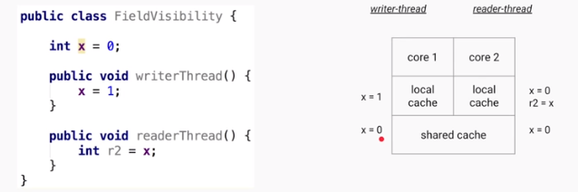
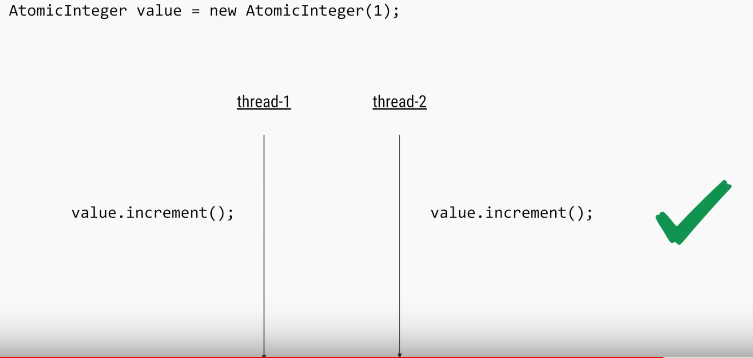
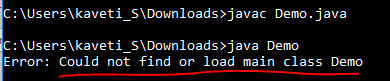

Basics
What is a strongly typed programming language?
In a strongly typed language compiler ensure type correctness, for example, you can not store the number in String or vice-versa.
Java is a strongly typed language, that’s why you have different data types Ex int, float, String, char, boolean etc.
On the other hand, weakly typed language don’t enforce type checking at compile time and they tree values based upon context. Python and Perl are two popular example of weakly typed programming language, where you can store a numeric string in number type.
Can you describe three different kinds of testing that might be performed?
Unit Testing, Integration Testing and Smoke Testing.
-
Unit testing is used to test individual units to verify whether they are working as expected
-
Integration Testing is done to verify whether individually tested module can work together or not
-
Smoke Testing is a way to test whether most common functionality of software is working properly or not e.g. in a flight booking website, you should be able to book, cancel or change flights.
What is the difference between iteration and recursion? (detailed answer)
-
Iteration uses a loop to perform the same step again and again.
-
Recursion calls the same method itself to do the repetitive task
What is test-driven development?
Test driven is one of the popular development methodologies in which tests are written before writing any function code. In fact, test drives the structure of your program. Purists never wrote a single line of application code without writing a test for that. It greatly improve code quality and often attributed as a quality of rockstar developers.
How do you find a running Java process on UNIX?
You can use the combination of ‘ps’ and ‘grep’ command to find any process running on UNIX machine. ps -e will list every process i.e. process from all user not just you and ps -f will give you full details including PID, which will be required if you want to investigate more or would like to kill this process using kill command.
| ps -ef | grep “java” |
Difference between WeakReference vs SoftReference vs PhantomReference vs Strong reference in Garbage Collection?
there are four kind of reference in Java :
-
Strong reference
-
Weak Reference
-
Soft Reference
-
Phantom Reference
JVM Internals and Garbage Collection
public class Zoo {
public static void main(String[] args) {
System.out.println(args[0]);
System.out.println(args[1]);
}
}
The program correctly identifies the first two -words” as the arguments. Spaces are used to separate the arguments. If you want spaces inside an argument, you need to use quotes as in this example:
$ javac Zoo.java
$ java Zoo "San Diego" Zoo
All command-line arguments are treated as String objects, even if they represent another data type:
$ javac Zoo.java
$ java Zoo Zoo 2
Finally, what happens if you don’t pass in enough arguments?
$ javac Zoo.java
$ java Zoo Zoo
Zoo
Exception in thread “main” java.lang.ArrayIndexOutOfBoundsException: 1 at mainmethod.Zoo.main(Zoo.java:7)
public class Conflicts {
Date date;
// some more code
}
The answer should be easy by now. You can write either import java.util.*; or import java.util.Date;. The tricky cases come about when other imports are present:
import java.util.*;
import java.sql.*; // DOES NOT COMPILE
import java.util.Date;
import java.sql.*;
If you explicitly import a class name, it takes precedence over any wildcards present.
■ octal (digits 0–7), which uses the number 0 as a prefix—for example, 017
■ hexadecimal (digits 0–9 and letters A–F), which uses the number 0 followed by x or X as a prefix—for example, 0xFF
■ binary (digits 0–1), which uses the number 0 followed by b or B as a prefix—for example, 0b10
System.out.println(56); // 56
System.out.println(0b11); // 3
System.out.println(017); // 15
System.out.println(0x1F); // 31
added in Java 7. You can have underscores in numbers to make them easier to read:
int million1 = 1000000;
int million2 = 1_000_000;
double notAtStart = _1000.00; // DOES NOT COMPILE
double notAtEnd = 1000.00_; // DOES NOT COMPILE
double notByDecimal = 1000_.00; // DOES NOT COMPILE
double annoyingButLegal = 1_00_0.0_0; // this one compiles
Declaring Multiple Variables
int i1, i2, i3 = 0;
As you should expect, three variables were declared: i1, i2, and i3. However, only one of those values was initialized: i3. The other two remain declared but not yet initialized.
int num, String value; // DOES NOT COMPILE
This code doesn’t compile because it tries to declare multiple variables of different types in the same statement.
double d1, double d2; // DOES NOT COMPILE
If you want to declare multiple variables in the same statement, they must share the same type declaration and not repeat it. double d1, d2; would have been legal.
boolean b1, b2;
String s1 = "1", s2;
double d1, double d2;
int i1; int i2;
int i3; i4;
-
The first statement is legal. It declares two variables without initializing them.
- second statement is also legal. It declares two variables and initializes only one of them.
-
The third statement is not legal. Variables d1 and d2 are the same type & breaks between them.
- The fourth statement is legal.The fifth statement is not legal.The second one is not a valid declaration because it omits the type.
Garbage Collection
The methods to request JVM to run Garbage Collector
System.gc() : ‘System’ class contains a static ‘gc’ method for requesting JVM to run Garbage Collector.
Runtime.getRuntime().gc() : gc() method available in Runtime class is an instance method.
1.Nullifying the reference Variable
Student s1 = new Student();
Student s2 = new Student();
//No Object eligible for Garbage Collector
s1 = null;
//One Object eligible for Garbage Collector
s2 = null;
Both Objects eligible for Garbage Collector
2.Reassigning the reference Variable
Student s1 = new Student();
Student s2 = new Student();
s1 = s2;
//One Object eligible for Garbage Collector
3.The Objects Created inside a method
The objects which are created in a method are by default eligible for Garbage Collector once the
method completes
1: public class Scope {
2: public static void main(String[] args) {
3: String one, two;
4: one = new String("a");
5: two = new String("b");
6: one = two;
7: String three = one;
8: one = null;
9: } }
Difference between PATH and Classpath in Java?
Answer : PATH is a environment variable in Java which is used to help Java program to compile and run.To set the PATH variable we have to include JDK_HOME/bin directory in PATH environment variable and also we cannot override this variable.
On the other hand, ClassPath variable is used by class loader to locate and load compiled Java codes stored in .class file. We you want to run JUnit from any where from cmdline you eed to add Junit.jar in class path.
Difference between interpreter and JIT compiler?
The interpreter interprets the bytecode line by line and executes it sequentially. It results in poor performance. JIT compiler add optimization to this process by analyzing the code in blocks and then prepare more optimized machine code.
Difference between JRE and JVM?
JVM is the specification for runtime environment which executes the Java applications. Hotspot JVM is such one implementation of the specification. It loads the class files and uses interpreter and JIT compiler to convert bytecode into machine code and execute it.
Difference Between JVM & HotSpot VM
JVM : is a Specification, HotSpot : is a implementation of JVM.
HotSpot** **is an implementation of the JVM concept, originally developed by Sun and now owned by Oracle. There are other implementations of the JVM specification, like JRockit, IBM J9, among many others.
Is Java a pure object oriented language? (answer)
Java is not a pure object-oriented programming language e.g. There are many
things in Java which are not objects e.g. primitive data types
e.g. boolean, char, short, int, long, float, double, different kinds of
arithmetic, logical and bitwise operator e.g. +, -. *, /, &&, || etc. Few
pure OO languages are Smalltalk and Eiffel.
There are seven qualities to be satisfied for a programming language to be
pure Object Oriented. They are:
1.Encapsulation/Data
Hiding
2.Inheritance
3.Polymorphism
4.Abstraction
5. All predefined types are objects
6. All operations are performed by sending messages to objects
7. All user defined types are objects
How does WeakHashMap work?
WeakHashMap operates like a normal HashMap but uses WeakReference for keys. Meaning if the key object does not devise any reference then both key/value mapping will become appropriate for garbage collection.
How do you locate memory usage from a Java program?
Answer: You can use memory related methods from java.lang.Runtime class to get the free memory, total memory and maximum heap memory in Java.
| public static Runtime getRuntime() | returns the instance of Runtime class. |
|---|---|
| public void exit(int status) | terminates the current virtual machine. |
| public void addShutdownHook(Thread hook) | registers new hook thread. |
| public Process exec(String command) | executes given command in a separate process. |
| public int availableProcessors() | returns no. of available processors. |
| public long freeMemory() | returns amount of free memory in JVM. |
| public long totalMemory() | returns amount of total memory in JVM. |
public class TestApp {
public static void main(String[] args) {
Runtime r = Runtime.getRuntime();
System.out.println(r.totalMemory()); //16252928
System.out.println(r.freeMemory()); //15709576
System.out.println(r.availableProcessors());//24
r.gc();
}
}
What is ClassLoader in Java?
When a Java program is converted into .class file by Java compiler which is collection of byte code. ClassLoader is responsible to load that class file from file system, network or any other location
-
Bootstrap ClassLoader - JRE/lib/rt.jar
-
Extension ClassLoader - JRE/lib/ext or any directory denoted by java.ext.dirs
-
Application ClassLoader - CLASSPATH environment variable, -classpath or -cp option, Class-Path attribute of Manifest inside **JAR file.**
Class Loader in Java BootStrap Extension and Application
Java heap memory
When a Java program started Java Virtual Machine gets some memory from Operating System.
whenever we create an object using new operator or by any another means the object is allocated memory from Heap and When object dies or garbage collected, memory goes back to Heap space.
How to increase heap size in Java
Default size of Heap space in Java is 128MB on most of 32 bit Sun’s JVM but its highly varies from JVM to JVM. change size of heap space by using JVM options -Xms and -Xmx. Xms denotes starting size of Heap while -Xmx denotes maximum size of Heap in Java.
Java Heap and Garbage Collection
As we know objects are created inside heap memory and Garbage Collection is a process which removes dead objects from Java Heap space and returns memory back to Heap in Java.
For the sake of Garbage collection Heap is divided into three main regions named as New Generation, Old Generation, and Perm space
Screen Clipping
-
New Generation of Java Heap is part of Java Heap memory where a newly created object is stored,
-
Old Generation During the course of application many objects created and died but those remain live they got moved to Old Generation by Java Garbage collector thread
-
Perm space of Java Heap is where JVM stores Metadata about classes and methods, String pool and Class level details.
-
Perm Gen stands for permanent generation which holds the meta-data information about the classes.
-
Suppose if you create a class name A, it’s instance variable will be stored in heap memory and class A along with static classloaders will be stored in permanent generation.
-
Garbage collectors will find it difficult to clear or free the memory space stored in permanent generation memory. Hence it is always recommended to keep the permgen memory settings to the advisable limit.
-
JAVA8 has introduced the concept called meta-space generation, hence permgen is no longer needed when you use jdk 1.8 versions.
Eden Space – New Objects are Created
Survivor Space – Once Eden space is full, Minor thread try to clear the Space, the objects which are survived by GC will be placed in Survivor space.
Old Gen – Objects which are survived from a long time, let say 16 Cycles (GC cycle Threshold) of Minor Garbage Collector, those objects moved to Old Gen. The Old Gen space finally collected by Main Garbage collector.
Finally, Minor Garbage collector will runs only on Young Gen, Main Garbage Collector will run on whole heap space
Does Garbage collection occur in permanent generation space in JVM?
YES, Garbage Collection occur in PermGen space as well. and if PermGen space is full or cross a threshold, it can trigger Full GC(Main Thread). If you look at output of GC you will find that PermGen space is also garbage collected. This is why correct sizing of PermGen space is important to avoid frequent full GC. You can control size of PermGen space by JVM options -XX:PermGenSize and -XX:MaxPermGenSize.
Types of Garbage Collectors
When an object is no longer used, the garbage collector reclaims the underlying memory and reuses it for future object allocation. This means there is no explicit deletion and no memory is given back to the operating system.
Java has four types of garbage collectors,
Each of these four types has its own advantages and disadvantages. Most importantly, we the programmers can choose the type of garbage collector to be used by the JVM. We can choose them by passing the choice as JVM argument
1. Serial Garbage Collector
-
It is designed for the single-threaded environments.
-
It uses just a single thread for garbage collection.
-
It freezes(stops) all the application threads while performing garbage collection.
-
it may not be suitable for a server environment. It is best suited for simple command-line programs.
Turn on the **-XX:+UseSerialGC **JVM argument to use the serial garbage collector.
2. Parallel Garbage Collector
-
It is the default garbage collector of the JVM.
-
It uses multiple threads for garbage collection.
-
Similar to serial garbage collector this also freezes(siops) all the application threads while performing garbage collection.
3. Concurrent Garbage Collector
-
Concurrent Mark Sweep (CMS) garbage collector uses multiple threads to scan the heap memory to mark instances for eviction and then sweep the marked instances.
-
It runs along with our Application. Uses multiple cores(cpus) to run multiple GC’s concurrently.
-
Here your application won’t pass/stop
Turn on the XX:+USeParNewGC JVM argument to use the CMS garbage collector.
4. G1 Garbage Collector
-
G1 garbage collector is used for large heap memory areas.
-
It separates the heap memory into regions and does collection within them in parallel.
-
G1 also does compacts the free heap space on the go just after reclaiming the memory.
-
G1 collector prioritizes the region based on most garbage first.
Turn on the –XX:+UseG1GC JVM argument to use the G1 garbage collector.
https://www.youtube.com/watch?v=UnaNQgzw4zY

Java 8 Improvement
Turn on the -XX:+UseStringDeduplication **JVM argument while using G1 garbage collector. This optimizes the heap memory by removing duplicate String values to a single char[] array**. This option is introduced in Java 8 u 20.
Given all the above four types of Java garbage collectors, which one to use depends on the application scenario, hardware available and the throughput requirements.
Garbage Collection JVM Options
Type of Garbage Collector to run
| Option | Description |
|---|---|
| -XX:+UseSerialGC | Serial Garbage Collector |
| -XX:+UseParallelGC | Parallel Garbage Collector |
| -XX:+UseConcMarkSweepGC | CMS Garbage Collector |
| -XX:ParallelCMSThreads= | CMS Collector – number of threads to use |
| -XX:+UseG1GC | G1 Gargbage Collector |
GC Optimization Options
| Option | Description |
|---|---|
| -Xms | Initial heap memory size |
| -Xmx | Maximum heap memory size |
| -Xmn | Size of Young Generation |
| -XX:PermSize | Initial Permanent Generation size |
| -XX:MaxPermSize | Maximum Permanent Generation size |
Garbage collection is performed by a daemon thread called Garbage Collector(GC). This thread calls the finalize() method before object is garbage collected.
The Garbage collector of JVM collects only those objects that are created by new keyword. So if you have created any object without new, you can use finalize method to perform cleanup processing (destroying remaining objects).
Neither finalization nor garbage collection is guaranteed.
How String Literals Garbage Collected?
Strings created without using the new keyword are NEVER garbage collected. Even if there are no references to them. All such strings go into the String pool and just sit there till the whole program ends (ie. the JVM).The String Const. pool cleaned up when the class is unloaded by the JVM.
How to you monitor garbage collection activities?
just to check whether candidate has ever monitored GC activities or not. You can monitor garbage collection activities either offline or real-time. You can use tools like JConsole and VisualVM VM with its Visual GC plug-in to monitor real time garbage collection activities and memory status of JVM or you can redirect Garbage collection output to a log file for offline analysis by using -XlogGC=<PATH> JVM parameter. Anyway you should always enable GC options like -XX:PrintGCDetails -X:verboseGCand -XX:PrintGCTimeStamps as it doesn’t impact application performance much but provide useful states for performance monitoring.

How do you identify minor and major garbage collection in Java?
-
Minor collection prints GC if garbage collection logging is enable using –verbose:gc or -XX:PrintGCDetails
-
Major collection prints -Full GC”.
How to Generate GC Log File?
In order to understand the GC log, you first need to generate one. Passing the following system properties to your JVM would generate GC logs
-XX:+PrintGCDetails -XX:+PrintGCDateStamps –Xloggc:D://gc.log
Or add visual-gc plugin to visualVM
What Security model used by Java?
Sandbox. The sandbox security model makes it easier to work with software that comes from sources you don’t fully trust.
What is -Phontom” memory
A memory that doesn’t exist in reality.
A phantom reference lets you do final touch up closing on an object, even after it has been declared dead — no longer referenced by any live object.
During garbage collection, these reference objects are handled specially; that is, the referent field is not traced during the marking phase. When marking is complete, the references are processed in sequence for sweeping phase.
-
Soft
-
Weak
-
Final
-
Phantom
How many JVMs can run on a single machine?
Multiple, yes You can run as many JVMs as you can fit on your disk and in memory :)
Whenever you start a Java application, you’re first starting the JVM and then telling it which application to run. The answer to “which JVM” is simply: The JVM that you loaded the application with! for example, for execution of applets a separate JVM may exist and another JVM can be started by the User for execution of Java Byte Code, on a single machine.
Difference between Object Oriented and Object Based language
Object Oriented Languages
-
Object Oriented Languages supports all the features of Oops Abstraction, Encapsulation, Polymorhisum, Inhertance.
-
C#, Java, VB. Net are the examples of object oriented languages.
Object Based Languages
-
Object based languages does not support inheritance or, polymorphism or, both.
-
Object based languages does not support built-in objects.
-
Javascript, VB are the examples of object bases languages.
If I don’t provide any arguments on commandline, then String array of main() is Empty or NULL?
It’s Empty, but not Null.
Is main method compulsory in Java?
The answer to this question depends on version of java you are using. Prior to JDK 5, main method was not mandatory in a java program.
-
You could write your full code under static block and it ran normally.
-
The static block is first executed as soon as the class is loaded before the main();
Data Types
How do you convert bytes to String?
you can convert bytes to the string using string constructor which accepts byte[], just make sure that right character encoding otherwise platform’s default character encoding will be used which may or may not be same.
String str = new String(bytes, "UTF-8");
How do you convert bytes to long in Java
The byte takes 1 byte of memory and long takes 8 bytes of memory. Assignment 1 byte value to 8 bytes is done implicitly by the JVM.
byte –> short –> int –> long –> float –> double
The left-side value can be assigned to any right-side value and is done implicitly. The reverse requires explicit casting.
byte b1 = 10; // 1 byte
long l1 = b1; // one byte to 8 bytes, assigned implicitly
Is ++ operator is thread-safe in Java?
No it’s not a thread safe operator because its involve multiple instructions like reading a value, incriminating it and storing it back into memory which can be overlapped between multiple threads.
Volatile Vs Atomic variables?
Volatile Example


-
If writerThread() is executed by one thread & readerThread() is executed by another thread
-
the ‘x’ value is different for two threads because they are reading value from their LocalCache.
-
Here the changes of X value is not visible globally (Field Visibility), because they are changing in LocalCache.
To avoid this, we need to use ‘volatile’ keyword for fields.
-
The Java volatile keyword is used to mark a Java variable as “being stored in main memory”.
-
that means, every read of a volatile variable will be read from the main memory(Shared Memory), and not from the CPU cache
-
every write to a volatile variable will be written to main memory, and not just to the CPU cache.
-
In the above diagram two threads t1, t2 are trying to change the value of flag.
-
If Thread1 changes value flag=false, then it will flush(push) the changes from LocalCache to SharedCache and it will refresh the all Thread LocalCaches with updated value.
-
If Thread 2 is trying to read, it will get updated value.
-
Volatile solves the visibility problem, where Only one operation is perform
Amtomic Problem
Atomic - forming a single irreducible unit or component in a larger system.
Increment (++) is an Compound Operation(multiple). AtomicVaribles makes compound operations as Atomic(Single)
We can solve this problem using Synchronization

Another Way using Atomic Variables

Atomic Varibles
The java.util.concurrent.atomic package defines classes that support atomic operations on single variables. All classes have get and set methods that work like reads and writes on volatile variables.
We have following Atomic classes
-
AtomicInteger
-
AtomicLong
-
AtomicBoolean
-
AtomicReference
-
AtomicIntegerArray
-
AtomicLongArray
-
AtomicReferenceArray
Common methods
-
incrementAndGet(): Atomically increments by one the current value.
-
decrementAndGet(): Atomically decrements by one the current value.
-
addAndGet(int delta): Atomically adds the given value to the current value.
-
compareAndSet(int expect, int update): Atomically sets the value to the given updated value if the current value == the expected value.
-
getAndAdd(int delta): Atomically adds the given value to the current value.
-
set(int newValue): Sets to the given value.
What will this return 3*0.1 == 0.3? true or false?
Both are not equal, because floating point arithmetic has a certain precision. Check the difference (a-b) it should be really small.
In computer memory, floats and doubles are stored using IEEE 754 standard format.
- f1 = (0.1+0.1+0.1….11 times) = 1.0999999999999999
- f2 = 0.1*11 = 1.1
In BigDecimal class, you can specify the rounding mode and exact precision which you want to use. Using the exact precision limit, rounding errors are mostly solved. Best part is that BigDecimal numbers are immutable i.e. if you create a BigDecimal BD with value -1.23”, that object will remain -1.23” and can never be changed. You can use it’s .compareTo() method to compare to BigDecimal numbers
private static void testBdEquality()
{
BigDecimal a = new BigDecimal("2.00");
BigDecimal b = new BigDecimal("2.0");
System.out.println(a.equals(b)); // false
System.out.println(a.compareTo(b) == 0); // true
}
Which one will take more memory, an int or Integer? (answer)
An Integer object will take more memory. an Integer is the an object and it store meta data overhead about the object and int is primitive type so its takes less space.
Autoboxing and Unboxing?
If a method(remember only method – not direct) requires Integer Object value, we can directly pass primitive value without issue. Autoboxing will take care about these.
We can also do direct initializations (1.8 V)
Integer i = 10;// it will create Integer value of 10 using Autoboxing
int j = i;// ;// it will convert Integer to int using Autoboxing
Previously it shows
Integer i = 10;// it will create Integer value of 10 using Autoboxing
int j = i;//But we cant assign int to Integer Type mismatch: cannot convert from Integer to int
How to convert Primitives to Wrapper & Wrapper to Primitive ??
// 1. using constructor
Integer i =new Integer(10);
// 2. using static factory method
Integer i = Integer.valueOf(10);
//3.wrapper to primitive
int val = i.intValue();
How does Autoboxing of Integer works in Java? (answer)
Compiler uses valueOf() method to convert primitive to Object uses intValue(), doubleValue() etc to get primitive value from Object.
what if I make main() private/protected ?
if you do not make main() method public, there is no compilation error. You will runtime error because matching main() method is not present. Remember that whole syntax should match to execute main() method.
Error: Main method not found in class Main, please define the main method as:
public static void main(String[] args)
What is blank final variable?
A blank final variable in Java is a final variable that is not initialized during declaration. Below is a simple example of blank final.
// A simple blank final example
final int i;
-
Value must be assigned in constructor/Static(static final) /Instance block before using it.
-
If we have more than one constructors or overloaded constructor in class, then blank final variable must be initialized in all of them.
Difference between java.util.Date & java.sql.Date?
-
java.util.Date represent both Date and Time information.
-
java.sql.Date just represent DATE without time information.
-
java.sql.Time and java.sql.TimeStamp which represents TIME and TIMESTAMP type of SQL database is more close to java.util.Date.
-
java.util.Date is Super class of java.sql.Date
Why Java does not support Operator Overloading?
The meaning of an operator is always same for variable of basic types like: int, float, double etc. For example: To add two integers, + operator is used.
However, for user-defined types (like: objects), you can redefine the way operator works. For example: If there are two objects of a class that contains string as its data members. You can redefine the meaning of + operator and use it to concatenate those strings.
To overload an operator, a special operator function is defined inside the class as
class className
{
... .. ...
public
returnType operator symbol (arguments)
{
... .. ...
}
... .. ...
};
#include <iostream>
using namespace std;
class Test
{
private:
int count;
public:
Test(): count(5){}
void operator ++()
{
count = count+1;
}
void Display() { cout<<"Count: "<<count; }
};
int main()
{
Test t;
// this calls "function void operator ++()" function
++t;
t.Display();
return 0;
}
-
This function is called when ++ operator operates on the object of Test class (object t in this case).
-
In the program, void operator ++ () operator function is defined (inside Test class).
-
This function increments the value of count by 1 for t object.
Why Java Doesn’t Support it?
1.Java is Simple, No Confusions Please!!
Java does not support operator overloading: Java is relatively a very simple
language to use compared C/C++ with the non-support of complex and confusing
features like pointers, multiple inheritance and operator
overloading. These features are rarely used in practice and at the same time
poorly understood by the language beginners.
2.JVM Performance: How many things Should i do?
Form JVM perspective supporting operator overloading is more difficult and if
the same thing can be achieved by using method overloading in more intuitive
and clean way it does make sense to not support operator overloading in java.
a complex JVM will result in slower JVM
Can you store String in an Integer array in Java? compile time error or runtime exception? [answer]
-
You cannot store an String in an array of primitive int, it will result in compile time error as shown below,
-
but if you create an array of Object and assign String[] to it and then try to store Integer object on it. Compiler won’t be able to detect that and it will throw ArrayStoreExcpetion at runtime
int[] primes = new int[10];
primes[0] = "a"; // compile time error
Object[] names = new String[3];
names[0] = new Integer(0);// ArrayStoreException at runtime
What is difference between ArrayIndexOutfOBounds and ArrayStoreException? [answer]
ArrayIndexOutOfBoundsException comes when your code tries to access an invalid
index for a given array e.g. negative index or higher index than length - 1.
ArrayStoreException comes when you have stored an element of type other than
type of array, as shown in above example.
Is it legal to initialize an array int i[] = {1, 2, 3, 4, 5}; [answer]
Yes, it’s perfectly legal. You can create and initialize array in same line in Java.
Where does array stored in memory? [answer]
Array is created in heap space of JVM memory. Since array is object in Java, even if you create array locally inside a method or block, object is always allocated memory from heap.
Array concept interview questions and answers in Java
Reverse Array using Iterative and Recursive approaches
Steps to Solve this
1.initialize array
2.Choose start index
3.Choose end index
4.Swap the elements using temp variable
package array;
public class ReverseArry {
/*
* Recursive approach: In recursive approach the function calls itself until
* the condition is met. And it is slower than iteration, which means it uses
* more memory than iteration. recursion is like a selection structure, and
* which makes code smaller and clean. And a function partially defined by
* itself. Here tracing the code will be more difficult in the case large
* programs
*/
public static int[] recursiveArry(int a[], int start, int end) {
if (start <= end) {
int temp;
temp = a[start];
a[start] = a[end];
a[end] = temp;
recursiveArry(a, start + 1, end - 1);//calling it again
}
return a;
}
/*
*Iterative approach: Iterative approach is a repetition process until the condition fails.here loops are used such as for, while etc. Here code may be longer but it is faster than recursive. And it consumes less memory compared to recursive approach.If the loop condition is always true in such cases it will be an infinite loop.
*/
public static int[] iteravtiveArray(int a[], int start, int end) {
while(start<end)
{
int temp;
temp = a[start];
a[start]=a[end];
a[end]=temp;
start++;
end--;
}
return a;
}
static void printArray(int arr[], int size) {
int i;
for (i = 0; i < size; i++)
System.out.print(arr[i] + " ");
System.out.println("");
}
public static void main(String[] args) {
// 1. Initialize array
int arr[] = { 1, 2, 3, 4, 5, 6 };
System.out.println("Input array is ");
printArray(arr, 6);
// 2. Choose Starting & ending point
int b[] = recursiveArry(arr, 0, 5);
System.out.println("Recursive -Reversed array is ");
printArray(b, 6);
int c[] = iteravtiveArray(arr, 0, 5);
System.out.println("IteravtiveArray -Reversed array is ");
printArray(c, 6);
}
}
Input array is
1 2 3 4 5 6
Recursive -Reversed array is
6 5 4 3 2 1
How do you reverse an array in Java?
org.apache.commons.lang.ArrayUtils class to reverse Array in Java. As discussed in our last post How to print array element in Java, We are using Arrays.toString() to print content of array.
int[] iArray = new int[] {101,102,103,104,105};
String[] sArray = new String[] {"one", "two", "three", "four", "five"};
//reverse int array using Apache commons ArrayUtils.reverse() method
System.out.println("Original int array : " + Arrays.toString(iArray));
ArrayUtils.reverse(iArray);
java.lang Package
We have mainly five classes in java.lang. Which are most commonly used in any java program
-
Object
-
String
-
StringBuffer
-
StringBuilder
-
Wrapper Classes (AutoBoxing / AutoUnboxing)
Object Class
The most common general methods which can be applicable on any java object are defined in object class. Object class is the parent class of any java class, whether it is predefined or programmer defined, hence all the object class methods are by default available to any java class.
Object class define the following 11 methods
1.toString():Returns a string representation of the object.
public String toString() {
return getClass.getName() + '@' + Integer.toHexString(HashCode);
}
2.hashCode():returns the integer representation of memory location which used by JVM while saving/adding Objects into Hashsets, Hashtables or Hashmap
3.equals(Object): Compares two Objects for equality.
4.clone(): Creates a new object of the same class as this object which implements Clonable interface.
Test t1 = new Test();
Test t2 = (Test)t1.clone();
5.finalize():Called by the garbage collector on an object when garbage collection determines that there are no more references to the object.
6.getClass():Returns the runtime class of an obj.getClass(), or the class-literal (Foo.class) return a Class object, which contains some metadata about the class:
- name
- package
- methods
- fields
- constructors
- annotations
we can create Class object by following ways
Class c = Class.forName(-StudentBO")
Class c = StudentBO.class
Class c = a.getClass();
public static void main(String[] args) throws Exception {
TestApp a = new TestApp();
Class c1 = a.getClass();
Class c = Class.forName("java.lang.String");
System.out.print("Class represented by c : " + c.toString());
Object obj = c.newInstance();
}
7.wait():Waits to be notified by another thread of a change in this object.
8.wait(long):Waits to be notified by another thread of a change in this object.
9.wait(long, int):Waits to be notified by another thread of a change in this object.
10.notify():Wakes up a single thread that is waiting on this object’s monitor.
11.notifyAll():Wakes up all threads that are waiting on this object’s monitor.
equals(Object otherObject) – As method name suggests, is used to simply verify
the equality of two objects. It’s default implementation simply check the object
references of two objects to verify their equality. By default, two objects
are equal if and only if they are stored in the same memory address.
hashcode() – Returns a unique integer value for the object in runtime. By
default, integer value is mostly derived from memory address of the object in
heap (but it’s not mandatory always).
If two objects are equal according to the equals(Object) method, then calling the hashCode method on each of the two objects must produce the same integer result.
Whenever we override the equals() method, we should override hashcode() method
In String class(not StringBuilder, StringBuffer) & All Wrapper classes equals()
method is overridden for Content Comparison
Compare two employee Objects based on Their Id?
public class Employe {
int id;
String name;
//Setters & Getters
@Override
public boolean equals(Object obj) {
Employe e = (Employe) obj;
boolean flag = false;
if (this.getId() == e.getId()) {
flag = true;
}
return flag;
}
public static void main(String[] args) {
Employe e1 = new Employe();
Employe e2 = new Employe();
e1.setId(101);
e2.setId(101);
System.out.println(e1.equals(e2));//true
System.out.println(e1.hashCode()); //366712642
System.out.println(e2.hashCode()); //1829164700 – here different
}
}
So are we done? If two objects are equal according to the equals(Object) method,
then calling the hashCode method on each of the two objects must produce the
same integer result. But here it is not!!
Not yet. Lets test again above modified Employee class in different way.
public static void main(String[] args) {
Employe e1 = new Employe();
Employe e2 = new Employe();
e1.setId(101);
e2.setId(101);
Set<Employe> set = new HashSet<>();
set.add(e1);
set.add(e2);
System.out.println(set); //[basic.Employe@15db9742, basic.Employe@6d06d69c]
}
Above class prints two objects in the second print statement. If both employee
objects have been equal, in a Set which stores only unique objects, there must
be only one instance inside HashSet
We are missing the second important method hashCode(). As java docs say, if you
override equals()method then you must override hashCode() method
public class Employe {
int id;
String name;
@Override
public boolean equals(Object obj) {
Employe e = (Employe) obj;
boolean flag = false;
if (this.getId() == e.getId()) {
flag = true;
}
return flag;
}
@Override
public int hashCode() {
return getId();
}
public static void main(String[] args) {
Employe e1 = new Employe();
Employe e2 = new Employe();
e1.setId(101);
e2.setId(101);
Set<Employe> set = new HashSet<>();
set.add(e1);
set.add(e2);
System.out.println(set); //[basic.Employe@65]
}
}
Apache commons provide two excellent utility classes EqualsBuilder & HashCodeBuilder for generating hash code and equals methods.
Can a top-level class be private or protected?
Top level classes in java can’t be private or protected, but inner classes in
java can. The reason for not making a top-level class as private is very
obvious, because nobody can see a private class and thus they cannot use it
What Happens if we compile Empty java file?
Compiles but Runtime Error.

Is it possible to make array volatile in Java?
Yes, you can make an array (both primitive and reference type array e.g. an int array and String array) volatile in Java, but only changes to reference pointing to an array will be visible to all threads, not the whole array.
What this means is that suppose you have a reference variable called primes
as shown below:
protected volatile int[] primes = new int[10];
then if you assign a new array to primes variable, change will be visible to all
threads, but changes to individual indices(a[0], a[1]…a[n]) will not be covered
under volatile guarantee i.e.
primes = new int[20];
It will follow the “happens-before” rule(Happens-before relationship is a guarantee that action performed by one thread is visible to another action in different thread.) and cause memory refresh, but following code will not do so
if multiple threads are changing individual array elements e.g. storing updates, there won’t be any happens-before guarantee provided by the volatile modifier for such modification
primes[0] = 10;
primes[1] = 20;
primes[2] = 30;
primes[3] = 40;
So, if your use-case is to provide memory visibility guarantee for individual
array elements than volatile is not the right choice. You must rely on other
synchronization and a thread-safety mechanism to cover this case
e.g. synchronized** keyword, atomic
variables,
or ReentrantLock.**
Is it possible to make ArrayList, Hashset volatile in Java?
On a similar note, sometimes instead of an array, Interviewer put the collection i.e. they will ask can you make a collection variable volatile in Java or not e.g. an ArrayList or HashMap. The answer is same, of course, you can make a reference variable pointing to a Collection volatile in Java, but the happens-before guarantee will only be provided if the value of that reference variable is changed e.g. you assign a new collection to it.
Any modification done on actual collection object e.g. adding or removing elements from ArrayList will not invoke happens-before guarantee or memory barrier refresh.
What is a.hashCode() used for? How is it related to a.equals(b)?
According to the Java specification, two objects which are identical to each other using equals() method needs to have the same hash code
What is a compile time constant in Java? What is the risk of using it?
Answer: Public static final variables are also known as the compile time constant, the public is optional there. They are substituted with actual values at compile time because compiler recognizes their value up-front, and also recognize that it cannot be altered during runtime.
One of the issues is that if you choose to use a public static final variable from in-house or a third party library, and their value changed later, then your client will still be using the old value even after you deploy a new version of JARs.
Explain Liskov Substitution Principle.
According to the Liskov Substitution Principle, Subtypes must be appropriate for super type i.e. methods or functions which use super class type must be able to work with object of subclass without issues. Co-Variant return types are implemented based on this principle.
What is double checked locking in Singleton?
Singleton means we can create only one instance of that class
Rules:
-
Create Singleton class Object make it as PRIVATE
-
Create PRIVATE constructor
-
Every Singleton class contains at least one factory method
class Student {
private static Student st;
private Student() {
System.out.println("OBJECET Created FIRST TIME");
}
public static Student getObject() {
if (st == null) {
st = new Student();
} else {
System.out.println("OBJECET ALREDAY CREATED");
}
return st;
}
}
public class Singleton {
public static void main(String[] args) {
Student s1 = Student.getObject();
Student s2 = Student.getObject();
System.out.println(s1.hashCode());//7855445
System.out.println(s2.hashCode());//7855445
}
}
Double checked locking in Singleton means, at any cost only one instance is created in multi-threaded environment.
In this case at null checking make Block as Synchronized.
public static Singleton getInstanceDC() {
if (_instance == null) { // Single Checked
synchronized (Singleton.class) {
if (_instance == null) { // Double checked
_instance = new Singleton();
}
}
}
return _instance;
}
When to use volatile variable in Java?
-
Volatile keyword is used with only variable in Java
-
it guarantees that value of volatile variable will always be read from main memory and not from Thread’s local cache.
-
So, we can use volatile to achieve synchronization because its guaranteed that all reader thread will see updated value of volatile variable once write operation completed
Difference between Serializable and Externalizable in Java?
Serialization is a default process of serializing or persisting any object’s state in Java. It’s triggered by implementing Serializable interface which is a marker interface (an interface without any method). uses default implementation to handle the object serialization process.
Externalizable is used to user defined serialization process and control default serialization process which is implemented by application.
Externalizable interface extends Serializable interface. It consists of two methods
// to read object from stream
void readExternal(ObjectInput in)
// to write object into stream
void writeExternal(ObjectOutput out)
Difference between static and dynamic binding in Java? (detailed answer)
This is usually asked as follow-up of previous question, static binding is related to overloaded method and dynamic binding is related to overridden method.
Method like private, final and static are resolved using static binding at compile time but virtual methods which can be overridden are resolved using dynamic binding at runtime.
Which design pattern have you used in your production code?
-
Dependency injection
-
Factory pattern
-
Adapter Design pattern
-
Singleton
-
Decoratordesign pattern is used to modify the functionality of an object at runtime.
Can you explain Liskov Substitution principle?(Comes under inheritance )
According to Liskov Substitution Principle, Subtypes must be substitutable for supertype i.e. methods or functions which uses superclass type must be able to work with the object of subclass without any issue
How to create an instance of any class without using new keyword
*****************************************
1.Using newInstance method of Class class
*****************************************
Class c = Class.forName("StudentBo");
StudentBo bo = (StudentBo) c.newInstance();
*****************************************
2.Using clone() of java.lang.Object
*****************************************
NewClass obj = new NewClass();
NewClass obj2 = (NewClass) obj.clone();
How can we invoke any external process in java?
Using,
Runtime.getRuntime().exec(…)
Static imports rules ?
The static import feature of Java 5 facilitates the java programmer to access any static member of a class directly. There is no need to qualify it by the class name.
import static java.lang.System.*; (or)
import static java.lang.System.out;
class StaticImportExample{
public static void main(String args[]){
out.println("Hello");//Now no need of System.out
out.println("Java");
}
}
Ambiguity in static import
// both have MAX_VALUE as static
import static java.lang.Integer.*;
import static java.lang.Byte.*;
class Geeks {
public static void main(String[] args)
{
out.println(MAX_VALUE);
}
}
Error:Reference to MAX_VALUE is ambigious
Java OOPs Concepts
Can we prevent overriding a method without using the final modifier? (answer)
Yes, you can prevent the method overriding in Java without using the final modifier. In fact, there are several ways to accomplish it e.g. you can mark the method private or static, those cannot be overridden.
Can we override a private method in Java? (answer)
No, you cannot. Since the private method is only accessible and visible inside the class they are declared, it’s not possible to override them in subclasses. But we can re-decalre in sub class , it will trated as a new method, bcoz parent class private method is not visible to subclass.
class A{
private void show() {
System.out.println("Parent");
}
}
public class Demo extends A{
private void show() {
System.out.println("Child");
}
public static void main(String[] args) {
A a = new Demo();
a.show();
}
}
Exception in thread "main" java.lang.Error: Unresolved compilation problem:
The method show() from the type A is not visible at Demo.main(Demo.java:12)
Though, you can override them inside the inner class as they are accessible there.
Can we change the return type of method to subclass while overriding? (answer)
Yes, you can, but only from Java 5 onward. This feature is known as covariant method overriding and it was introduced in JDK 5 release. This is immensely helpful if original method return super-class e.g. clone() method return java.lang.Object. By using this, you can directly return the actual type, preventing client-side type casting of the result.
Can we make a class both final and abstract at the same time? (answer)
No, you cannot apply both final and abstract keyword at the class same time because they are exactly opposite of each other. A final class in Java cannot be extended and you cannot use an abstract class without extending and make it a concrete class. As per Java specification, the compiler will throw an error if you try to make a class abstract and final at the same time.
Can we overload or override the main method in Java? (answer)
No, since main() is a static method, you can only overload it, you cannot override it because the static method is resolved at compile time without needing object information hence we cannot override the main method in Java.
Design Patterns
SOLID design principles and GOF design patterns which take advantage of OOPS concept discussed here.
What are SOLID Design principles
Image result for solid design principles
1. Single Responsibility Principle
-One class should have one and only one responsibility”
In other words, we should write, change and maintain a class for only one purpose. If it is model class then it should strictly represent only one actor/ entity. This will give we the flexibility to make changes in future without worrying the impacts of changes for another entity.
2. Open Closed Principle
-Software components should be open for extension, but closed for modification”
If we take a look into any good framework like struts or spring, we will see that we cannot change their core logic and request processing, but we modify the desired application flow just by extending some classes and plugin them in configuration files.
For example, spring framework has class DispatcherServlet. This class acts as front controller for String based web applications. To use this class, we are not required to modify this class. All we need is to pass initialization parameters and we can extend it’s functionality the way we want.
3. Liskov’s Substitution Principle
-Derived types must be completely substitutable for their base types”
4. Interface Segregation/Separation Principle
This principle is my favorite one. It is applicable to interfaces as single responsibility principle holds to classes. ISP says:
-Clients should not be forced to implement unnecessary methods which they will not use”
Take an example. Developer Alex created an interface Reportable and added two methods generateExcel() and generatedPdf(). Now client ‘A’ wants to use this interface but he intend to use reports only in PDF format and not in excel. Will he be able to use the functionality easily?
NO. He will have to implement both the methods, out of which one is extra burden put on him by designer of software. Either he will implement another method or leave it blank. This is not a good design.
5. Dependency Inversion/Injection Principle
Remove dependency from classes
In spring framework, all modules are provided as separate components which can work together by simply injected dependencies in other module. This dependency is managed externally in XML files.
What are GOF(Gang of Four) design patterns?
Image result for gof design patterns
1. Creational Design Patterns (Object Creation)
Creational patterns often used in place of direct instantiation with constructors. They make the creation process more adaptable and dynamic. In particular, they can provide a great deal of flexibility about which objects are created, how those objects are created, and how they are initialized.
| DESIGN PATTERN NAME | PURPOSE |
|---|---|
| Builder | Builder design pattern is an alternative way to construct complex objects and should be used only when we want to build different types of immutable objects using same object building process. |
| Prototype | Prototype design pattern is used in scenarios where application needs to create a large number of instances of a class, which have almost same state or differ very little. |
| Factory | Factory design pattern is most suitable when complex object creation steps are involved. To ensure that these steps are centralized and not exposed to composing classes. |
| Abstract factory | Abstract factory pattern is used whenever we need another level of abstraction over a group of factories created using factory pattern. |
| Singleton | Singleton enables an application to have one and only one instance of a class per JVM. |
2. Structural Design Patterns
Structural design patterns show us how to glue different pieces of a system together in a flexible and extensible fashion. These patterns help us guarantee that when one of the parts changes, the entire application structure does not need to change.
| DESIGN PATTERN NAME | PURPOSE |
|---|---|
| Adapter | An adapter convert the interface of a class into another interface clients expect. It lets classes work together that couldn’t otherwise because of incompatible interfaces. |
| Bridge | Bridge design pattern is used to decouple a class into two parts – abstraction and it’s implementation – so that both can evolve in future without affecting each other. It increases the loose coupling between class abstraction and it’s implementation. |
| Composite | Composite design pattern helps to compose the objects into tree structures to represent whole-part hierarchies. Composite lets clients treat individual objects and compositions of objects uniformly. |
| Decorator | Decorator design pattern is used to add additional features or behaviors to a particular instance of a class, while not modifying the other instances of same class. |
| Facade | Facade design pattern provide a unified interface to a set of interfaces in a subsystem. Facade defines a higher-level interface that makes the subsystem easier to use. |
| Flyweight | Flyweight design pattern enables use sharing of objects to support large numbers of fine-grained objects efficiently. A flyweight is a shared object that can be used in multiple contexts simultaneously. The flyweight acts as an independent object in each context. |
| Proxy | In proxy design pattern, a proxy object provide a surrogate or placeholder for another object to control access to it. Proxy is heavily used to implement lazy loading related usecases where we do not want to create full object until it is actually needed. |
3. Behavioral Design Patterns
Behavioral patterns abstract an action we want to take on the object or class that takes the action. By changing the object or class, we can change the algorithm used, the objects affected, or the behavior, while still retaining the same basic interface for client classes.
| DESIGN PATTERN NAME | PURPOSE |
|---|---|
| Chain of responsibility | Chain of responsibility design pattern gives more than one object an opportunity to handle a request by linking receiving objects together in form of a chain. |
| Command | Command design pattern is useful to abstract the business logic into discrete actions which we call commands. These command objects help in loose coupling between two classes where one class (invoker) shall call a method on other class (receiver) to perform a business operation. |
| Interpreter | Interpreter pattern specifies how to evaluate sentences in a language, programatically. It helps in building a grammar for a simple language, so that sentences in the language can be interpreted. |
| Iterator | Iterator pattern provides a way to access the elements of an aggregate object sequentially without exposing its underlying representation. |
| Mediator | Mediator pattern defines an object that encapsulates how a set of objects interact. Mediator promotes loose coupling by keeping objects from referring to each other explicitly, and it lets us vary their interaction independently. |
| Memento | Memento pattern is used to restore state of an object to a previous state. It is also known as snapshot pattern. |
| Observer | Observer pattern defines a one-to-many dependency between objects so that when one object changes state, all its dependents are notified and updated automatically. It is also referred to as the publish-subscribe pattern. |
| State | In state pattern allows an object to alter its behavior when its internal state changes. The object will appear to change its class. There shall be a separate concrete class per possible state of an object. |
| Strategy | Strategy pattern is used where we choose a specific implementation of algorithm or task in run time – out of multiple other implementations for same task. |
| Template method | Template method pattern defines the sequential steps to execute a multi-step algorithm and optionally can provide a default implementation as well (based on requirements). |
| Visitor | Visitor pattern is used when we want a hierarchy of objects to modify their behavior but without modifying their source code. |
What is Strategy pattern in Java?
Strategy pattern allows you to introduce new strategy without changing the code.
For example, the Collections.sort() method which sorts the list of the object uses the Strategy pattern to compare object. Since every object uses different comparison strategy you can compare various object differently without changing sort method.
What is Decorator Design Pattern?
Decorator pattern provides new features without modifying the original class. Inheritance is the example.
What is the difference between Decorator, Proxy and Adapter pattern in
Java? (answer)
Again they look similar because their structure or class diagram is very similar
but their intent is quite different. Decorator adds additional functionality
without touching the class, Proxy provides access control and Adapter is used to
make two incompatible interfaces work together.
What is a strongly typed programming language?
In a strongly typed language compiler ensure type correctness, for example, you can not store the number in String or vice-versa.
Java is a strongly typed language, that’s why you have different data types Ex int, float, String, char, boolean etc.
On the other hand, weakly typed language don’t enforce type checking at compile time and they tree values based upon context. Python and Perl are two popular example of weakly typed programming language, where you can store a numeric string in number type.
Can you describe three different kinds of testing that might be performed?
Unit Testing, Integration Testing and Smoke Testing.
-
Unit testing is used to test individual units to verify whether they are working as expected
-
Integration Testing is done to verify whether individually tested module can work together or not
-
Smoke Testing is a way to test whether most common functionality of software is working properly or not e.g. in a flight booking website, you should be able to book, cancel or change flights.
What is the difference between iteration and recursion? (detailed answer)
-
Iteration uses a loop to perform the same step again and again.
-
Recursion calls the same method itself to do the repetitive task
What is test-driven development?
Test driven is one of the popular development methodologies in which tests are written before writing any function code. In fact, test drives the structure of your program. Purists never wrote a single line of application code without writing a test for that. It greatly improve code quality and often attributed as a quality of rockstar developers.
How do you find a running Java process on UNIX?
You can use the combination of ‘ps’ and ‘grep’ command to find any process running on UNIX machine. ps -e will list every process i.e. process from all user not just you and ps -f will give you full details including PID, which will be required if you want to investigate more or would like to kill this process using kill command.
| ps -ef | grep “java” |
Difference between WeakReference vs SoftReference vs PhantomReference vs Strong reference in Garbage Collection?
there are four kind of reference in Java :
-
Strong reference
-
Weak Reference
-
Soft Reference
-
Phantom Reference